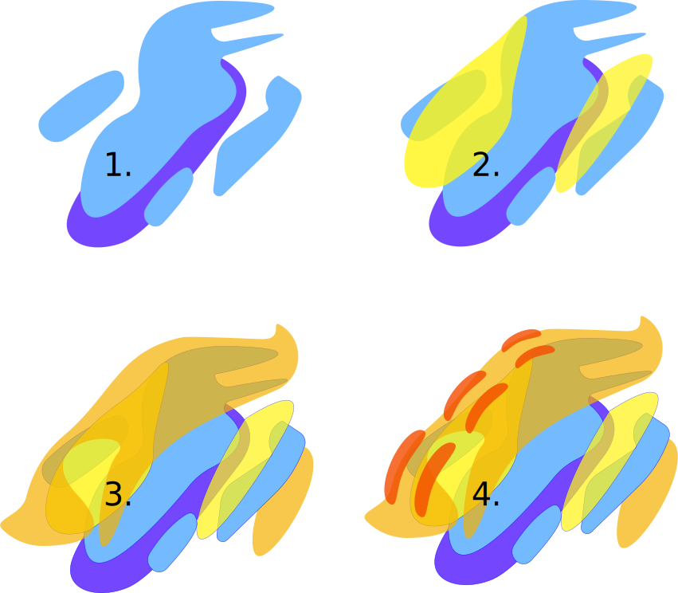
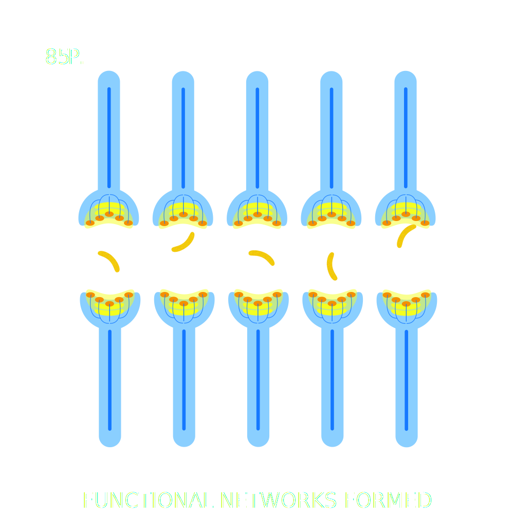
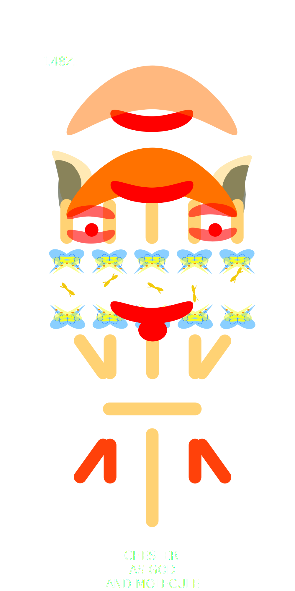

Birth
February 1993
At an early age I was not allowed to eat spicy food. "Flamin'
Hot Cheetos" had been invented one year previously in 1992, and although
my pallette had not been developed, it was certainly an
ideal time to be brought into the world.
Behind the scenes MKULTRA and the Cheetos corporation
were working on something big, I would later credit my
mutant abilities to their experimentation.
Cheesiness: 3 / 10
Psychic Abilities: 0 / 10
Happiness: N/A

Cheetos Cheesy Checkers
1995 - 1998
Chester the Cheetah personally revolutionized the
snacking industry, creating a Cheeto with a larger surface area than ever before.
The Russians have slowly started to build up their nuclear arsenal as a reaction
to this vagrant display of snacking technology.
At 3 years old I inadvertantly use my mind powers to explode a pigeon outside my window.
Cheesiness: 5 / 10
Psychic Abilities: 3 / 10
Happiness: 2/10

Baked Cheetos
2004-2007
The Cheetos Coporation Releases Baked Cheetos in 2004.
Global Riots take place as a means of resistance,
Chester The Cheetah Addresses the United Nations
declaring the Cheetos Corporation as a sovereign country.
Days later the United States attempts to fire a nuclear
missle at the Cheetos Naval vessel "Cheesy Waters".
Chester intercepts the missle with his psychic abilities.
The "Flamin' Hot Wars" have begun.
I am 11 years old, I recieve my first telekentic broadcast from the Cheetos Pysychic Assembly. I am called to fight.
Cheesiness: 7 / 10
Psychic Abilities: 5 / 10
Happiness: 1/10

Xxtra Flamin' Hot
2008
In a desperate attempt to gain control of the North American Continent,
the Cheetos corporation releases Xxtra Flamin' Hot Cheetos.
Due to the extinction of the Dairy Cow, massive facilities
have been created to milk human beings and process their milk into cheese for the harvest.
Russia, The United States and China have banned together as allies to confront the
Cheese Menace. Chester is decapitated in the "Battle of New York" - thinking quickly - top Cheetos Scientists
reserrect him through breakthroughs in robotics and synthetic biology.
Mecha-Chester is an even more delerious facist than his precursor,
unbenonwst to his generals he pivots his strategy
toward total global destruction.
At 15 years old I am brought into the resistance, and trained to use my psychic abilities to topple the growing cheese menace.
It is decided I will stay deep undercover - waiting for the opportune moment to strike.
Cheesiness: 12 / 10
Psychic Abilities: 7 / 10
Happiness: -2/10

Honey BBQ Cheetos
The Singularity
2012
Only fringes of Society have managed to hold on, there are no longer distinguishable barriers of countries.
Mecha-Chester has interfaced with the internet and monitors the world like a living god. The resistance has consolidated its forces in
Oregon. They wait for a highly anticipated Solar Flare: the only remaining chance they have left to even the playing field.
At 19 years old I am still deep undercover - I am sickened by the terrible things I have had to do to maintain this fascade.
Hopefully soon I will be able to rest.
Cheesiness: ∞ / 10
Psychic Abilities: 8 / 10
Happiness: -10/10

The End
2024
In October of 2024 the Solar Flare finally hit. With their robots diminished our ground forces were quickly able to take the Cheetos World headquarters.
The God had been blinded, for the first time in years I felt free of the madman's gaze. We worked swiftly, trying to instate a new
government inside the infastructure of the Cheetos Corporation, but the real challenge was to find and kill Mecha-Chester before he was able to reboot.
Our Intelligence teams had placed Mecha-Chester in a deep bunker in the Balkans - I was to lead our strike forces through to end it all. Victory felt so close- but when we stormed the stronghold we realized that he had been toying with us all along.
Mecha-Chester had been consolidating his power- spending the last 10 years constructing a bio-machine that would amplify his psychic abilities to a universal scale. He sat at his throne, an engorged monster with veiny wires that covered the walls, floors and ceilings of his vast compound.
With a passing glance he melted our ground teams, and suddenly he was in my mind - all around me I felt his presence. He stretched the moments of my pain into what felt like 10 lifetimes - but I knew that somehow I was still with him - in that exact moment.
I knew that if he survived he would learn to transcend time, and eventually he would come to control every concievable domain in this Dimension and Beyond.
I pressed with every ounce of my psychic being into the pain, and eventually I felt a tiny rupture, a crack. His laughter bellowed all around me, but his taunts could only mean one thing -he was afraid.
Pressed to it's limits and at the edge of bursting, my mind reached out, pleading, hoping that some god other than this freak would hear me. First just a whisper, a small hand grabbed my own.
I hear murmurs around me. The souls of the fallen have come to rally behind me- they surrounded me with love.
Tears stream down my face as my heart fills with gratitude and Mecha-Chester begins to drown.
We both realize there is no way our universe will survive this struggle,
but at least his hunger for power will be quelled- an eneternity of suffering will be avoided.
A moment before this climax, there is a instance of peace. Chester faces me.
"It ain't easy bein' Cheesy"
Then there is nothing.
